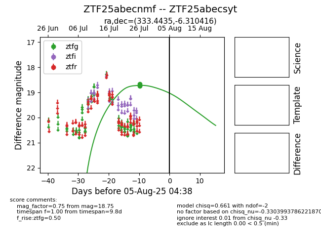

Target ZTF25abecsyt at 2025-08-05 04:38, see:
FINK: fink-portal.org/ZTF25abecsyt
Lasair: lasair-ztf.lsst.ac.uk/objects/ZTF25abecsyt
ALeRCE: alerce.online/object/ZTF25abecsyt
alt names
ZTF25abecnmf (ztf,fink)
ZTF25abecsyt (
coordinates:
equatorial (ra, dec) = (333.4435,-6.31042)
galactic (l, b) = (54.7236,-47.18223)
photometry
last ztfg=18.75
3 ztfg detections
